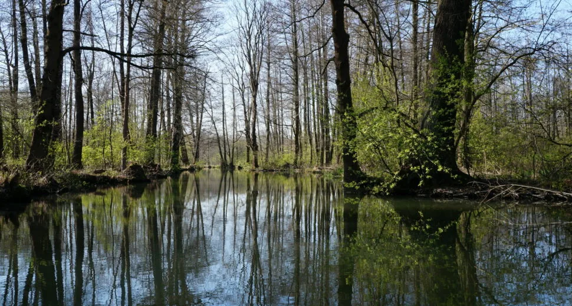

Kosten Kahnfahrschule & Verleih
Sind Sie interessiert an einer Kahnfahrschule oder Verleih? Dann nehmen Sie Kontakt mit uns auf!
Kontakt aufnehmen
Einst war der Holzkahn das einzige Fortbewegungsmittel im Spreewald. Das flache Gleitboot hat den Sprung in die Gegenwart geschafft. Das „grüne Venedig“ ohne Kähne? Undenkbar. Und wer einmal in einem Spreewaldkahn Platz genommen und sich durch die reizvolle Natur chauffieren lassen hat, dem kommt der leise Gedanke: „Das will ich auch mal machen!“ Höchste Zeit, den Wunsch nicht nur laut zu denken, sondern ihn Realität werden zu lassen. Träumen Sie noch oder staken Sie schon?
Der Mutschenhof in Lehde bietet seinen Hausgästen das regional einmalige Special „Rent a Kahn, drive alone“ an. Sie mieten, wir weisen ein und Sie schippern los. Haben Sie den Mut und den Entdeckerdrang, selbst im Kahn zu stehen. Werden sie nicht nur eins mit dem Rudel, wie die Spreewälder ihre Ruderstange nennen, sondern auch mit der Umgebung. Suchen Sie nicht die Stille und die Entschleunigung – im Kahn werden Sie sie finden. Einfach so.
Das Bewegen unserer Mietkähne ist keine Herausforderung, es ist eine Aufforderung zum Glücklichsein. Erkunden Sie die Gegend und genießen Sie die Tier- und Pflanzenwelt. Werden Sie Teil natürlicher Rhythmen, bei denen Motorenlärm keine Rolle spielt. Bei unser Kahnfahrschule „Rent a Kahn, drive alone“ dürfen auch Kinder unter Aufsicht ans Rudel und zum kleinen Gondoliere werden.

„Schatz, ich fahr schon mal den Kahn vor!“ Staken Sie abends zum Essen oder morgens zum Brötchen holen. Dank der unzähligen Anlegestellen kein Problem. Wir zeigen Ihnen, wie Sie sicher und richtig am Ziel festmachen.

Sind Sie interessiert an einer Kahnfahrschule oder Verleih? Dann nehmen Sie Kontakt mit uns auf!
Kontakt aufnehmenSie wollen Ihren Liebsten nicht nur irgendwas überreichen, sondern Sie mit einer ausgefallenen Idee überraschen? Dann verschenken Sie doch einen „Rent a Kahn“-Gutschein. Sprechen Sie uns gerne an.
Gutschein anfragen